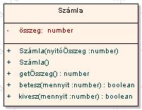

Angster Erzsébet: OO tervezés és programozás, Java I. kötet
Feladatmegoldások / 5. fejezet
Szamla.html
Készítette: Andor Gergely, 2003.03.01.

class Számla {
összeg : number
Számla(nyitóÖsszeg : number)
összeg = nyitóÖsszeg
end Számla
Számla()
Számla(0)
end Számla
getÖsszeg() : number
return összeg
end getÖsszeg()
betesz(mennyit : number) : boolean
if (mennyit > 0)
összeg =
összeg + mennyit
return true
else
return false
end if
end betesz
kivesz(mennyit : number) : boolean
if (mennyit > 0 & mennyit <= összeg)
összeg =
összeg - mennyit
return true
else
return false
end if
end kivesz
end Számla
számla1 : Számla
számla2 : Számla
számla3 : Számla
számla1 = new Számla()
out : "Számla 1: " , számla1.getÖsszeg()
számla1.betesz(10000)
out : "Számla 1: " , számla1.getÖsszeg()
számla2 = new Számla(számla1.getÖsszeg())
out : "Számla 2: " , számla2.getÖsszeg()
számla2.betesz(20000)
out : "Számla 2: "+számla2.getÖsszeg()
összeg : number
in : összeg
if
(számla2.kivesz(összeg))
számla3 = new Számla(összeg)
out : "Számla 2: " , számla2.getÖsszeg()
out : "Számla 3: " , számla3.getÖsszeg()
else
out : "Nincs " , összeg , " forint a második számlán!"